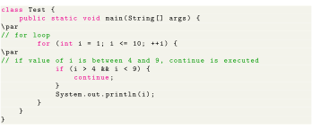
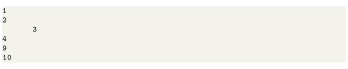
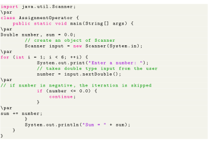
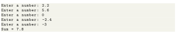

Next: Labeled continue Statement Up: Control Flow and Decision Previous: Labeled break Statement Contents
The continue statement in Java skips the current iteration of a loop (for, while, do...while, etc) and the control of the program moves to the end of the loop. And, the test expression of a loop is evaluated. In the case of for loop, the update statement is executed before the test expression. The continue statement is almost always used in decision-making statements (if...else Statement). It's syntax is:

Output:

In the above program, we are using for loop to print the value of i in each iteration. To know how for loop works, visit Java for loop. Here, notice the statement,

This means when the value of i becomes more than 4 and less then 9, the print statement inside the loop is skipped. Hence we get the output with values 5, 6, 7, and 8 skipped.
The program below calculates the sum of 5 positive numbers entered by the user. If the user enters negative number or zero, it is skipped from the calculation. To take input from the user, we have used the Scanner object. To learn more aboutScanner, visit Java Scanner.

Output:
